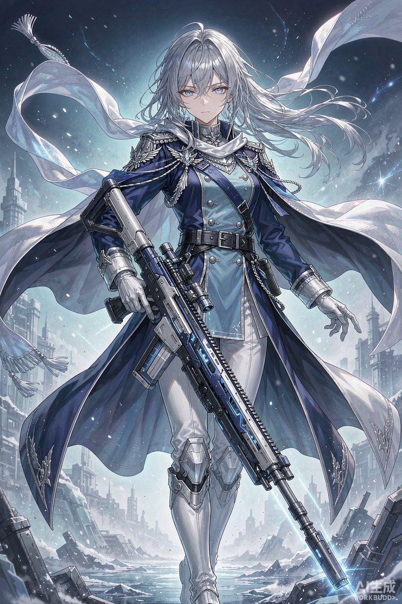

核心结论：布洛妮娅是常驻池中的"人权辅助"：战技拉条+增伤、终结技全队攻击+暴伤。几乎所有主C队伍都能用，抽到即赚，是常驻五星里最保值的一个。
一、角色定位
- 属性/命途：风 · 同谐
- 定位：通用辅助，拉条+增伤+暴伤
- 核心机制：战技拉条队友并增伤，终结技全队攻击力+暴伤，天赋普攻后下次拉条
- 强度评级：T1（常驻池最强辅助）
二、配队推荐
镜流队（毕业搭档）
镜流 + 布洛妮娅 + 佩拉 + 罗刹
- 拉条大幅缩短镜流启动期，暴伤+增伤完美补齐镜流缺的乘区
通用主C队
饮月 / 黄泉 / 希儿 + 布洛妮娅 + 辅助 + 生存位 — 布洛妮娅几乎可进所有单C队。
- 与饮月组队时注意战技点管理（饮月吃点多）
- 配合黄泉可多动加速叠层
速度配队技巧
布洛妮娅速度调整为略低于主C，可最大化拉条收益；光锥【但战斗还未结束】契合拉条机制。
三、遗器搭配
推荐套装
- 毕业：骇域漫游的信使 4 件套 + 折断的龙骨 / 不老者的仙舟 2 件套
- 过渡：速度散件 2+2
主词条
| 部位 | 推荐主词条 |
|---|---|
| 躯干 | 暴击伤害 / 生命% |
| 脚部 | 速度 |
| 位面球 | 生命值% / 防御力% |
| 连接绳 | 能量恢复效率 |
副词条优先级：速度 > 暴击伤害 > 生命/防御。生存压力大时优先堆肉。
四、光锥选择
| 优先级 | 光锥 | 说明 |
|---|---|---|
| S | 但战斗还未结束（专武） | 充能+拉条后增伤，机制完美契合 |
| A | 过往未来 | 拉条后增伤，商店可换满精，平民首选 |
| A | 舞！舞！舞！ | 终结技全队拉条，队伍提速好用 |
| B | 镂月裁云之意 / 轮契 | 过渡选择 |
五、星魂与抽取建议
| 配置 | 说明 |
|---|---|
| 0+0 | 机制完整，常驻池抽出即用，性价比极高 |
| 1魂 | 战技增伤覆盖更稳定 |
| 2魂 | 拉条后速度提升，循环优化 |
| 6魂 | 终结技延长增益回合，完全体 |
总结：无需专门抽取，常驻池歪到即赚。光锥【但战斗还未结束】或【过往未来】均可，0魂就是合格的人权辅助。